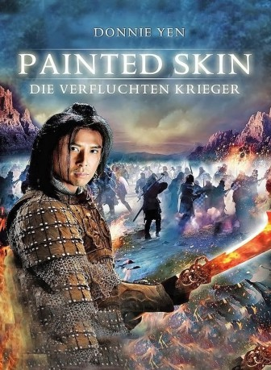

 
 IMDB-Wertung: 6.4 / 10
IMDB-Wertung: 6.4 / 10  Metascore:
Metascore: 
General Wang Sheng stößt zusammen mit seiner Truppe in der Wüste auf eine Gaunerbande und startet einen Angriff. Dabei trifft er die schöne Xiao Wei und nimmt sie mit zu seiner Festung. Dort verzaubert das engelsgleiche Wesen alle Männer, und auch General Wang ist von ihr fasziniert, kann ihrer Magie aber widerstehen, denn er liebt seine Frau Peirong. Als diese aber eine frühere Liebe wiedertrifft, wird sie wankelmütig. Unterdessen werden in der Festung Menschen ermordet und deren Herzen herausgeschnitten. Peirong glaubt zu wissen, wer der Killer ist, blutrünstige Dämonen sollen hier zu Werke gehen. Mit einigen Verbündeten begibt sie sich auf Dämonenjagd…
Jahr: 2008
Dauer: 118 Minuten
FSK: 16
Land: China Studio: New KSMTonspuren:
Untertitel: Deutsch,
Auflösung: 1080p (1920x824) Größe: 7639 MB
Genre: Action, Thriller, Drama, Fantasy
Regisseur: Gordon Chan, Andy Wing-Keung Chin, Danny Ko
Drehbuch: Ho Leung Lau
Soundtrack: Ikuro Fujiwara
Darsteller:
 Donnie Yen als Pang Yong
Donnie Yen als Pang Yong Xun Zhou als Xiao Wei
Xun Zhou als Xiao Wei Kun Chen als Wang Sheng
Kun Chen als Wang ShengDatei: X:\HD-Eastern-Classic(N-Z)\Painted Skin - Die verfluchten Krieger (2008, FSK16, 1920x824) 3D.mkv seit 01.03.2018
Festplatte: HD Eastern+Western
 Es gibt insgesamt 61 Filme in der Gruppe 'HD-Eastern-Classic(N-Z)'
Es gibt insgesamt 61 Filme in der Gruppe 'HD-Eastern-Classic(N-Z)'